Modo offline completo
Crea perfiles locales y juega sin conexión. Funciona de verdad, no es un parche: el launcher está construido sobre un sistema de identidades.
El launcher de Minecraft Java que cualquiera puede usar. Ligero, seguro y sin complicaciones: elige una versión, pulsa jugar y listo.
No afiliado a Mojang ni a Microsoft. Minecraft es una marca de Mojang Studios.
Hecho para gente sin experiencia técnica: nada de términos raros ni configuraciones escondidas.
Crea perfiles locales y juega sin conexión. Funciona de verdad, no es un parche: el launcher está construido sobre un sistema de identidades.
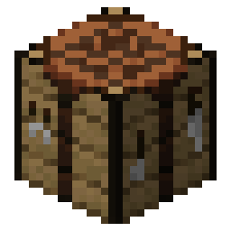
Cada instancia tiene su versión, sus mods y su memoria. Prueba lo que quieras sin romper tu partida principal.
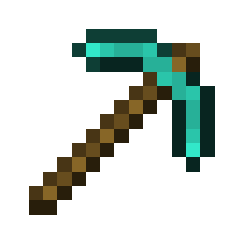
Busca en Modrinth, instala dependencias automáticamente, actívalos o desactívalos y vuelve atrás si una actualización falla.
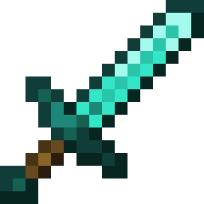
Instala el loader que quieras y el launcher se encarga del resto, también en versiones antiguas del juego.
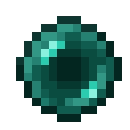
Importa y exporta modpacks de Modrinth. Si algo sale mal a mitad, se deshace todo y no se queda a medias.
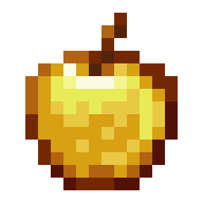
Dibuja tu skin con lápiz, relleno y capas, con vista 3D en vivo. La skin se adapta a la versión del juego.
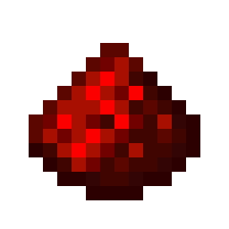
Descarga el Java correcto para cada versión (Java 8 exacto donde hace falta) y reparte la RAM según tu equipo y tus mods.
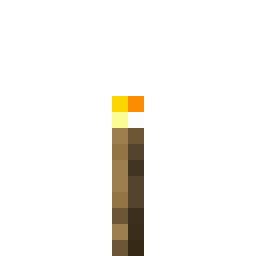
Verifica archivos, repara instalaciones dañadas y explica los cierres inesperados en lenguaje claro, no con un volcado de errores.
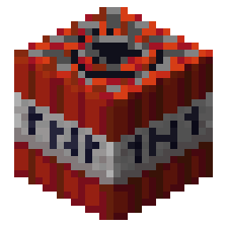
Sin secretos en el frontend, sin ejecutar comandos de shell, descargas verificadas por hash y solo desde dominios de confianza.
Interfaz con el estilo clásico de Minecraft: botones, fuente y fondo que ya conoces.
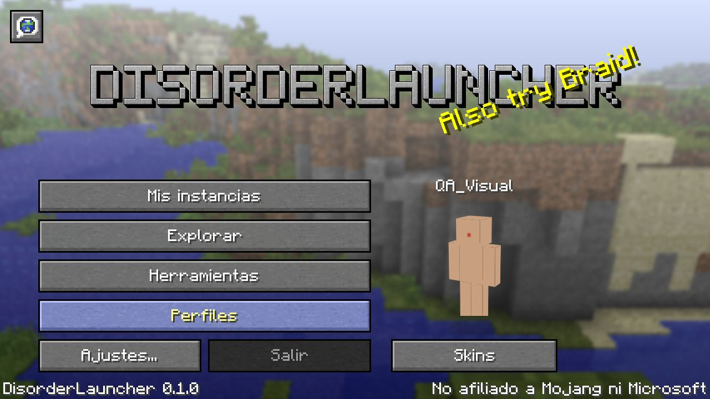
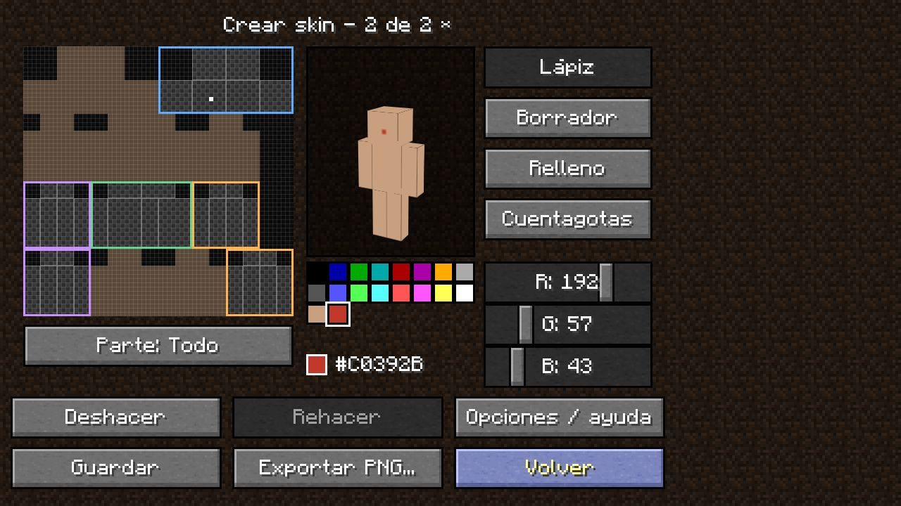
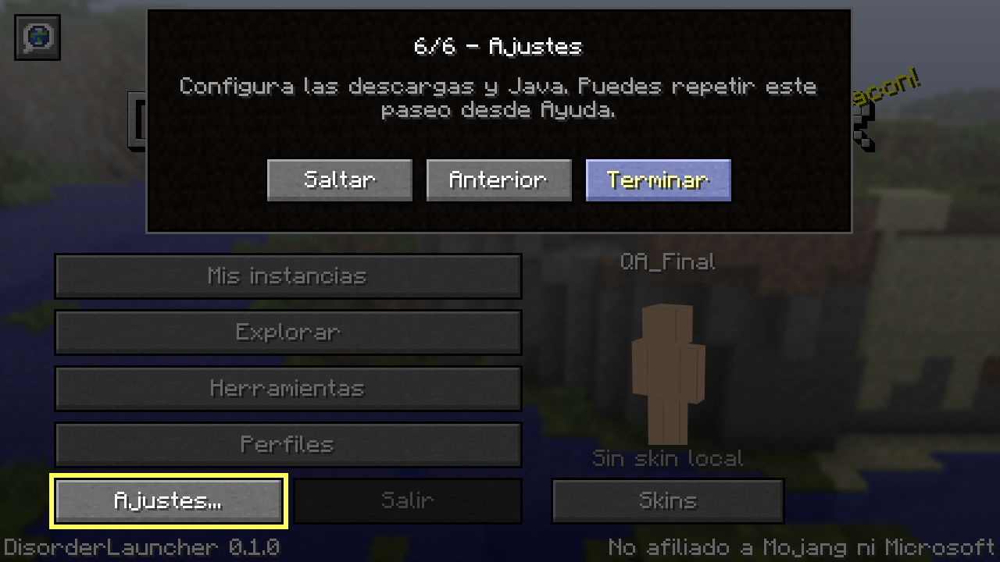
Pulsa el botón verde de descarga. Es un instalador de Windows (.exe) de pocos megas.
Ábrelo y sigue los pasos. Si Windows muestra «Windows protegió su PC», pulsa Más información y luego Ejecutar de todas formas: aún no tiene firma de editor y por eso Windows lo avisa.
Un paseo guiado te lleva por los ajustes, elige una versión y pulsa jugar. El launcher descarga todo lo necesario.
Windows 10 / 11 de 64 bits. Se recomienda tener 4 GB de RAM o más.
Sí. DisorderLauncher es software libre bajo licencia MIT: puedes usarlo, leer su código y modificarlo.
Puedes jugar sin ella con un perfil offline, pensado para uso local, desarrollo y servidores que admiten identidades locales. El perfil offline no sustituye una cuenta de pago ni sirve en servidores que exigen una sesión oficial. El inicio de sesión de Microsoft ya está diseñado en el núcleo del launcher, pero todavía falta verificarlo contra los servidores reales, así que de momento no está activo.
El código es público y se puede auditar. Los tokens nunca pasan por la interfaz, no se ejecutan comandos de shell para lanzar el juego, las descargas se validan con hash y solo se aceptan dominios de confianza. Puedes leer el informe de seguridad.
Firmar un instalador con certificado de editor cuesta dinero cada año y todavía no lo tiene. Mientras tanto Windows SmartScreen avisa de cualquier programa sin firma. Puedes comprobar el instalador comparando su huella SHA-256 con la que aparece en la página de la versión.
El código está preparado para varios sistemas y el proyecto compila en Linux, pero por ahora solo se prueba y se distribuye para Windows.
No. Es un proyecto independiente. Minecraft es una marca de Mojang Studios. El estilo visual es un homenaje y las texturas son propiedad de Mojang.